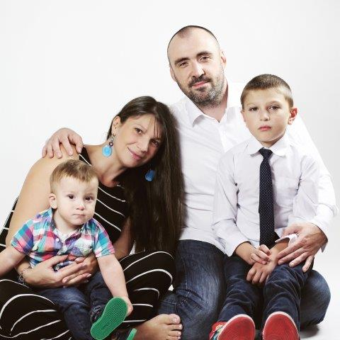

<link rel="import" href="../../bower_components/polymer/polymer.html">

<dom-module id="oyloo-contact">
  <style>
    paper-material {
      border-radius: 2px;
      height: 100%;
      padding: 16px 0 16px 0;
      width: calc(98.66% - 16px);
      margin: 16px auto;
      background: white;
      min-height: 512px;
    }
    /* Breakpoints */
    /* Small */
    
    @media (max-width: 600px) {
      paper-material {
        --menu-container-display: none;
        width: calc(97.33% - 32px);
        padding-left: 16px;
        padding-right: 16px;
      }
    }
    /* Tablet+ */
    
    @media (min-width: 601px) {
      paper-material {
        width: calc(98% - 46px);
        margin-bottom: 32px;
        padding-left: 30px;
        padding-right: 30px;
      }
    }
    
    img {
      float: left;
      margin: 16px 16px 16px 0px;
      width: 100%;
      max-width: 480px;
      height: 100%;
      border-radius: 4px;
    }
  </style>
  <template>
    <paper-material elevation="1">
      
      <h2 class="page-title">Contact</h2>
      <p>It is just begining.</p>
      <p>I would love to hear anything from you: <a href="mailto:feedback@oyloo.com">feedback@oyloo.com</a></p>
    </paper-material>
  </template>
  <script>
    (function() {
      'use strict';
      Polymer({
        is: 'oyloo-contact',
      });
    })();
  </script>
</dom-module>
